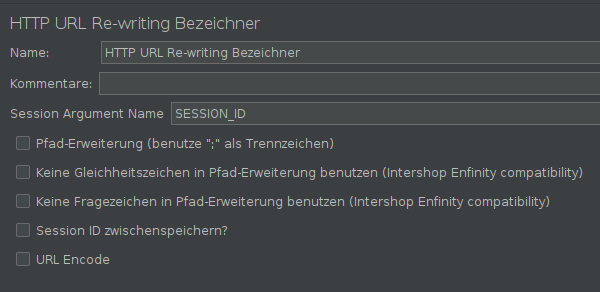

Nach einen Login: weitere Requests als authentifizierter User stellen
Ohne Session-Management: Ständig erneute Logins nötig
2 Möglichkeiten basierend auf die Applikation:
Session-Cookies: HTTP Header Manager oder HTTP Cookie Manager
URL Rewriting: HTTP URL Re-writing Modifier
Lektion 3 - Anwendungsbasierte Testpläne erstellen
Wie sehen komplexere Testpläne aus?
User-Login, Sessions, …?
Testplan: User-Login
Viele Ressourcen nur als angemeldeter Nutzer zugänglich
Weboberfläche: Formular
JMeter: POST-HTTP-Request oder Authorization Manager

HTTP Authorization Manager

Testplan: Sessions

Testplan: Sessions - Session-Cookies über Header Manager
Setzen der Session per HTTP Header

Testplan: Sessions - URL Rewriting
Erhalten der Session ID vom Server
anpassen der URL
Name der Session ID angeben
JMeter erkennt diese automatisch

Aufgabe 3.1: User-Login und Sessions
Erweitern Sie den vorherigen Performancetest um folgende Funktionalitäten:
Führen sie mit Hilfe von POST HTTP Requests einen Login durch.
Führen sie zunächst ein Index Aufruf der Anmeldeseite aus und analysieren sie diese, um den Pfad für den Login zu extrahieren (Post-Processor → Regular Expression Extractor)
Extrahieren sie auch alle Informationen über den übermittelten Session-Cookie (Name, Wert, Pfad)
Die IDs der Formularparameter sind
loginundpasswordDer Loginname ist beliebig, das Passwort lautet
secretAnschließend führen sie einen Refresh durch (die URL muss zuvor Extrahiert werden)
Machen Sie sinnvolle Assertions auf die erhaltenen Responses (verwendeter Loginname)
Hinweise:
Nutzen sie reguläre Ausdrücke bei den Extraktoren.